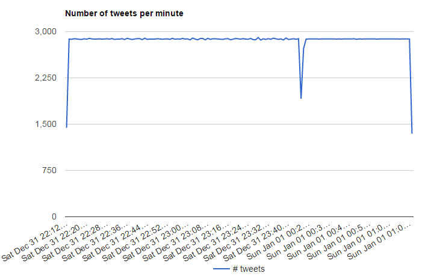
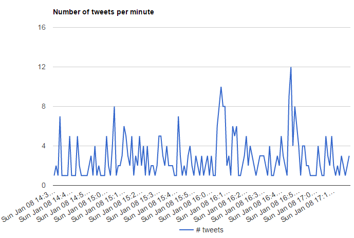

During the attempt of collecting tweets, many problems occurred.
First, the maximum number of tweets that my database can store is around 2880 as it is showed in the picture below.

As a result we cannot estimate which is the acurate number of tweets per minute for a specific theme as well as we cannot draw conclusions
for subjects with too general and too frequent keywords.
Furthermore the visualization of "the number of tweets per minute" cannot show tweets after approximately 13 hours of collection, so we cannot use this analysis for
long-terms findings.
Also, there was a problem with the keywords of tweets collected because it does not work alternatively but additively. For instance,if
we want to find tweets for "New Year" and for "Greece" the collector will not pick tweets with both hashtags but with either New Year or Greece.
For these reasons I collected tweets of a greek match in football. (with teams PAOK-PAS GIANNINA).
This match was helded on Sunday 8/1/2017 at 15:00. I started to collect tweets at 14:30 until 20:30.
These images referring to the number of Tweets per minute collecting with keyword "paok".

It is obvious that tweets fluctuate with no constant way. The peak of tweets is at 16:55 with 12 tweets when the match was ended.
The others peaks 7,8 and 10 tweets per minute was realized in times when team of Paok had lost an opportunity to score. It is also worth mentioning
that after the end of the game Paok kept on be referred on Twitter.